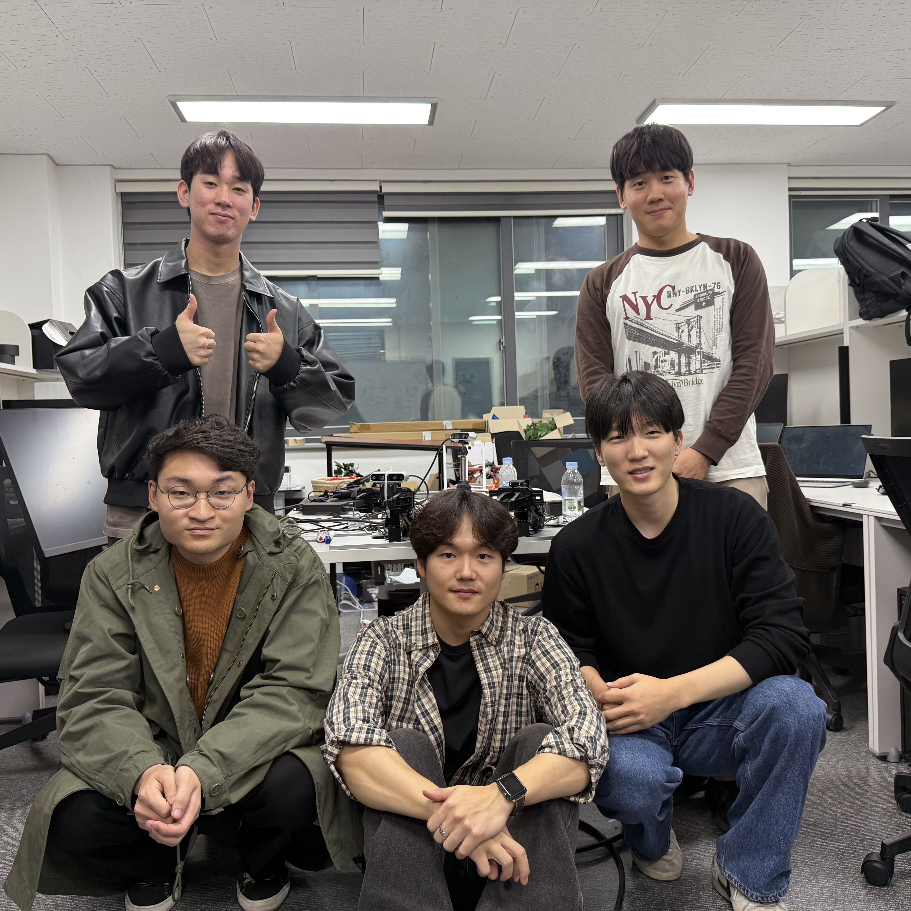
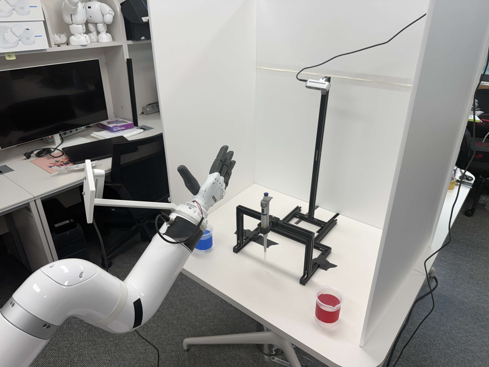
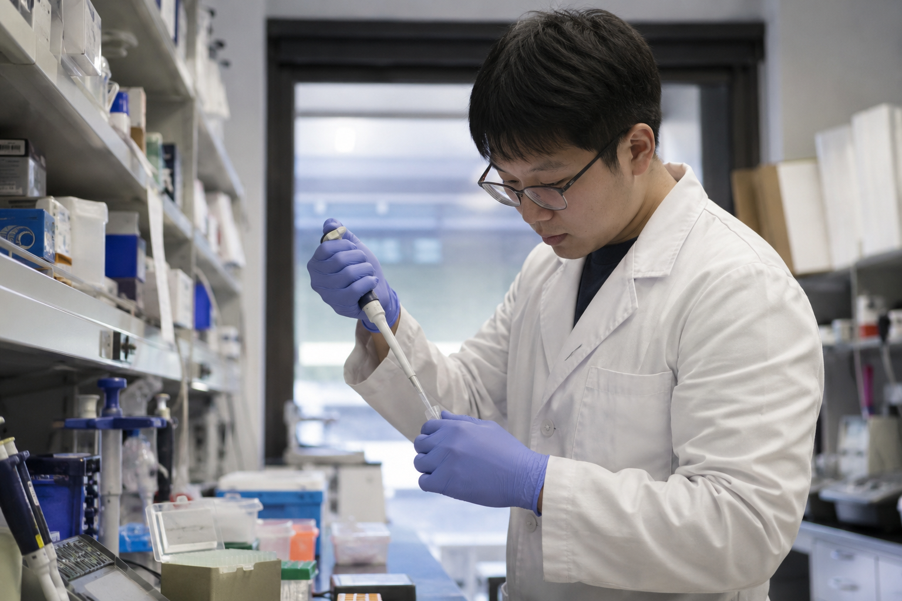
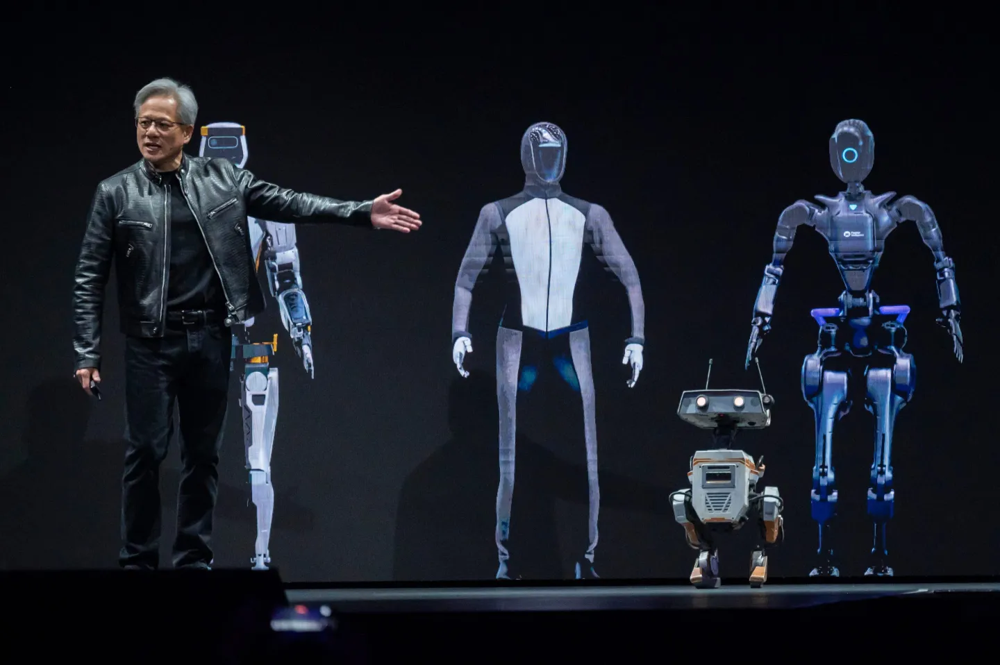
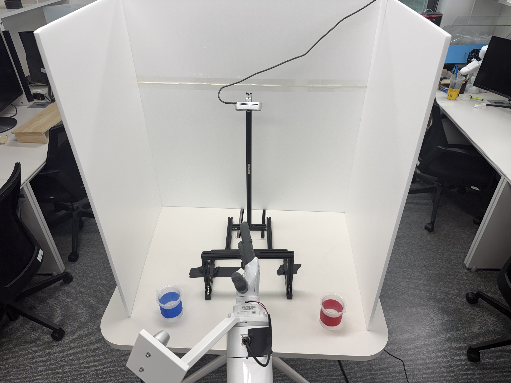
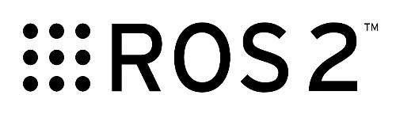
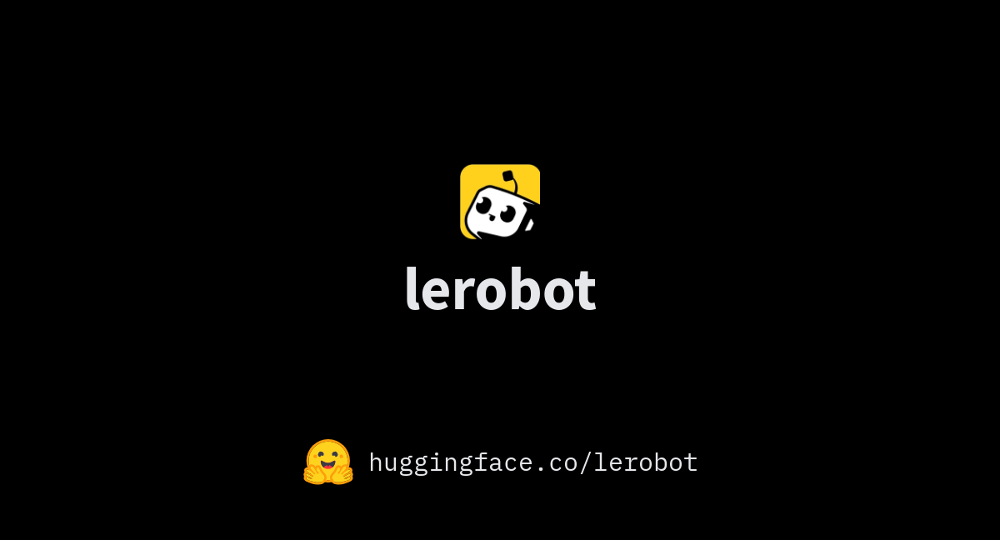
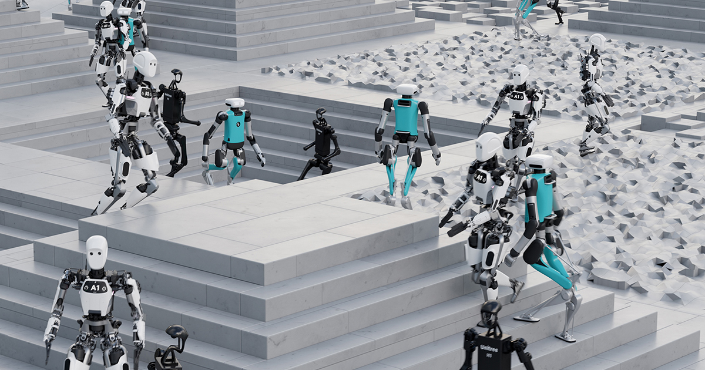

실제 로봇과 가상환경 데이터를 함께 활용해
정밀 파이펫 조작을 자동 수행하는 Physical AI 시스템.

Physical AI
기반 로봇팔이 카메라로 작업 환경을 직접 인식하고,
사람의 개입 없이 피펫을 정밀하게 조작하는 프로젝트입니다.


거대 언어 모델 다음은 Physical AI — 로봇이 시각·언어·행동을 통합해 실제 환경에서 작동하는 새로운 패러다임. 빅테크와 스타트업이 일제히 뛰어들며 시장이 빠르게 형성 중이다.

NVIDIA GTC · Project GR00T젠슨 황 키노트에서 Project GR00T 휴머노이드 파운데이션 모델 발표 — Isaac Sim · Lab으로 산업 표준화 가속
Microsoft · OpenAI · NVIDIA 공동 참여 Series B. BMW 공장 시범 도입 — 휴머노이드의 실제 산업 적용 시작
하나의 정책이 여러 로봇 임바디먼트에 적용되는 파운데이션 모델 등장 — 로봇의 GPT 모먼트 도래
휴머노이드 로봇 시장 규모 전망. 일부 분석은 210조 원+ 예측 — 연 30%↑ 성장세로 산업 인프라 재편 예고
인간이 직접 시연하며 데이터를 수집하고, 이를 바탕으로 가상환경에서 모방 학습 + 강화 학습을 동시에 진행합니다.
사람이 로봇을 원격 조작
관절 · 카메라 데이터 저장
실제 수집 데이터로 BC(Behavioral Cloning) 기반 모방 학습
가상환경 구성 후 BC 데이터를 초기값으로 강화 학습 진행
6-DoF 협동 로봇팔. 피펫 위치 이동 및 자세 제어
피펫 파지 및 버튼 조작에 최적화된 5지 로봇 핸드
Wrist · Overhead 두 시점의 RGB-D 카메라
실제 실험에서 사용하는 피펫과 베드 셋업

ROS2가 시스템 백본, LeRobot이 모방 학습, Isaac Sim이 강화 학습을 담당합니다.

로봇팔 · 그리퍼 · 카메라 노드를 묶는 통합 제어 미들웨어. 노드 간 실시간 통신 백본.
Communication Layer · No AI
인간 시연 데이터로 행동 정책을 학습. 다양한 로봇 임바디먼트에 표준화된 학습 파이프라인 제공.
AI: BC · Diffusion Policy · ACT
가상환경에서 BC 데이터를 초기값으로 강화 학습 진행. 물리 기반 시뮬 + GPU 병렬 환경 제공.
AI: PPO · SAC · GPU-Accelerated RL드라이버 코드 작성부터 현실 로봇 적용까지, 5단계 실행 과정.
Indy7 로봇팔 · 만드로 그리퍼 · RealSense 통합 드라이버 코드 구현
직접교시로 관절 위치/속도/토크 · Wrist+Overhead RGB-D · 그리퍼 명령 · 성공 여부 기록
수집 데이터를 LeRobot 형식으로 변환 후 BC 모방 학습 정책 학습
가상환경 구성 + BC 정책을 초기값으로 강화 학습으로 정책 최적화
학습된 정책을 ROS2 환경에서 실시간 추론 — 실제 피펫 조작 수행
Indy7 로봇팔 · 만드로 그리퍼 · RealSense를 ROS2로 묶는 통합 드라이버 구현 데모.
사람이 직접 시연하며 관절 · 카메라 · 그리퍼 데이터를 수집하는 장면.
수집한 NPZ 데이터를 LeRobot 형식으로 변환하고, BC 기반 행동 정책을 학습하는 과정.
가상환경에서 BC 정책을 초기값으로, 보상 기반 강화 학습으로 정책을 최적화하는 과정.
ROS2 환경에서 학습된 정책을 실시간 추론으로 실행 — 실제 피펫 조작 데모.
실패의 66%가 위치·경로 오류 —
학습 데이터 다양성 부족.
"한두 번 더 시도하면 잡힌다" — 정책이 거의 다 왔다.
18.6% → 더 높은 성공률을 위해 네 가지 축으로 개선합니다.
실패의 66%가 위치·경로 오류 — 다양한 시연 시나리오로 episode 수를 늘려 정책의 일반화 범위 확장.
LeRobot · BC 재학습"잘못된 위치", "미세 오차" 같은 실패 패턴을 학습 데이터·보상 함수에 명시적으로 포함 — Domain Randomization 적용.
Isaac Sim · RL 보상 다양화직접교시에 더해 VR로 추가 시연 데이터를 수집 — 다양한 시나리오와 수집 규모를 함께 확장.
개발 진행 중병렬 강화학습 환경 구동 — Isaac Sim 다중 시뮬로 학습 시간 단축, 더 큰 모델 시도 가능.
학습 가속 · 자원 확보반복 작업 자동화 가능성 제시
작업자 피로도와 반복 오차 감소
피펫 외 다양한 정밀 조작 과제로 확장
Physical AI 기반 로봇 학습 시스템으로 발전
Digital Twin 활용한 데이터 수집 비용 절감
바이오 실험실 · 연구실 자동화 · 산업용 정밀 조작
Indy7과 자체 그리퍼로
피펫 조작을 자동화하다.
실제 + 가상 데이터를 함께 활용하는 Physical AI 시스템으로
로봇 학습 데이터 부족 문제를 보완합니다.